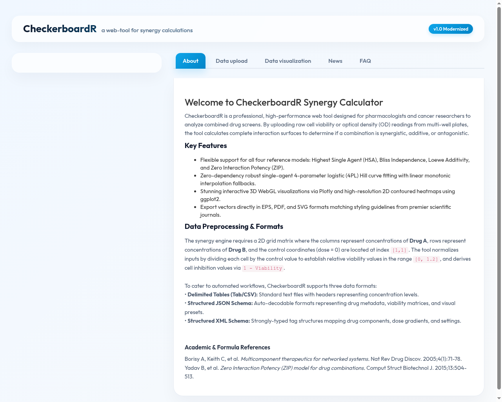

CheckerboardR · Scientific drug-combination analysis
Checkerboard assay synergy analysis
CheckerboardR is a free web application for evaluating whether two compounds act synergistically, additively or antagonistically across a dose matrix. It calculates multiple reference models so conclusions are not tied to a single definition of non-interaction.

Supported synergy models
| Model | Question answered |
|---|---|
| HSA | Does the combination outperform the more effective single agent at the same doses? |
| Bliss | Does the observed effect exceed the expectation for statistically independent action? |
| Loewe | Does the combination outperform dose additivity relative to the single-agent curves? |
| ZIP | Does the combination change potency relative to a zero-interaction response surface? |
| Consensus | Do the conservative HSA, Bliss and Loewe estimates support the same interaction? |
Preparing a dose matrix
Columns should represent increasing concentrations of condition A and rows increasing concentrations of condition B. Include zero-dose controls for both agents. CheckerboardR accepts CSV, TAB, pasted tables, structured JSON or XML, and Excel workbooks. Matched matrices can be uploaded as independent replicates for SEM and bootstrap confidence intervals.
Interpreting the scores
Positive interaction scores indicate that observed inhibition exceeds the selected non-interaction reference; negative values indicate antagonism. Magnitude and biological relevance should be considered alongside replicate uncertainty, assay quality, dose coverage and agreement between models. A local high-scoring cell should not be treated as proof without examining the surrounding response surface.
Publication-ready reporting
The application produces labelled 2D heatmaps, interactive and static 3D surfaces, single-agent fitted curves, summary statistics and an auditable CSV containing observed, expected, fitted and interaction-score matrices. Figures can be exported as PDF, SVG or EPS.
Start an analysis
Open the CheckerboardR calculator, choose a bundled example or upload your own matrix, confirm whether values represent viability or inhibition, and compare the HSA, Bliss, Loewe, ZIP and consensus views.